Chapter 3. 클래스와 객체¶
'명품 C++Programming - 황기태' 3장 학습 내용
1절. 클래스와 객체
2절. 클래스
3절. 생성자
4절. 소멸자
5절. 접근 지정자
6절. 인라인 함수
7절. 구조체
8절. 헤더
1절. 클래스와 객체¶
캡슐화¶
- 객체의 캡슐화(encapsulation)
- 객체의 본질적인 특성
- 객체를 캡슐로 싸서 그 내부를 보호하고 볼 수 없도록 만듦
- 캡슐에 든 약은 어떤 색인지 어떤 성분인지 보이지 않고, 외부로부터 안전
- 캡슐화의 목적
- 객체 내 데이터에 대한 보안, 보호, 외부 접근 제한
- 캡슐화의 사례(TV 객체)
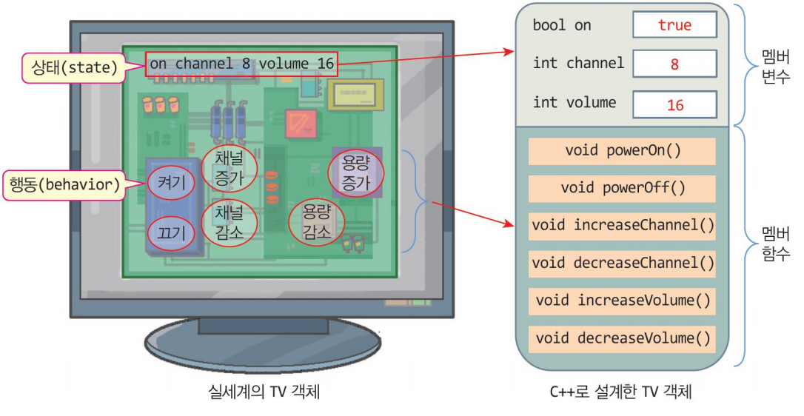
C++에서의 클래스와 객체¶
- 클래스
- 객체를 만들어내기 위해 정의된 설계도, 틀
- 클래스 != 객체
- 클래스는 실체가 아님
- 멤버 변수와 멤버 함수 선언
- 객체
- 객체는 생성될 때 클래스의 모양을 가짐
- 멤버 변수와 멤버 함수로 구성
- 메모리에 생성
- 실체(instance)라고도 부름
- 하나의 클래스 틀에서 찍어낸 여러 개의 객체 생성 가능
- 객체들은 상호 별도의 공간에 생성
- 클래스와 객체의 관계
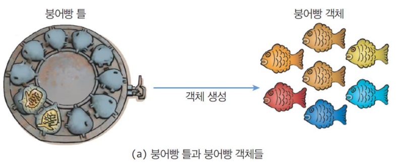
2절. 클래스¶
클래스 작성의 기본¶
- 클래스 작성
- 멤버 변수, 멤버 함수로 구성
- 클래스 선언부, 클래스 구현부로 구성
- 클래스 선언부(Class Declaration)
- class 키워드를 이용하여 클래스 선언
- 멤버 변수와 멤버 함수 선언
- 멤버 변수는 클래스 선언 내에서 초기화 불가
- 멤버 함수는 원형(prototype) 형태로 선언
- 멤버에 대한 접근 지정
- private, public, protected 중 하나
- default는 private
- public : 다른 모든 클래스나 객체에서 멤버의 접근이 가능함
- 클래스 구현부(Class Implementation)
- 클래스에 정의된 모든 멤버 함수 구현
- 그림으로 클래스 작성 확인하기
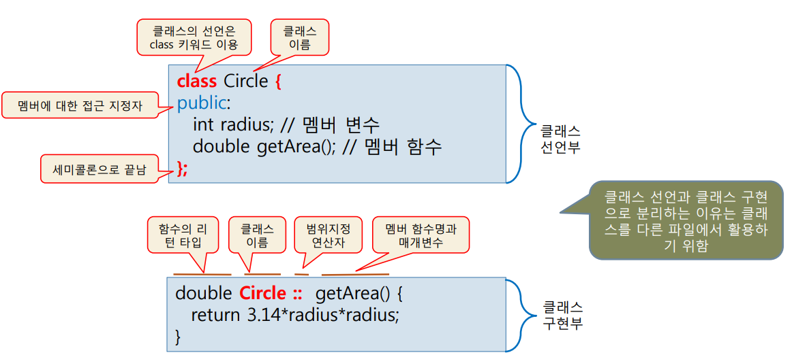
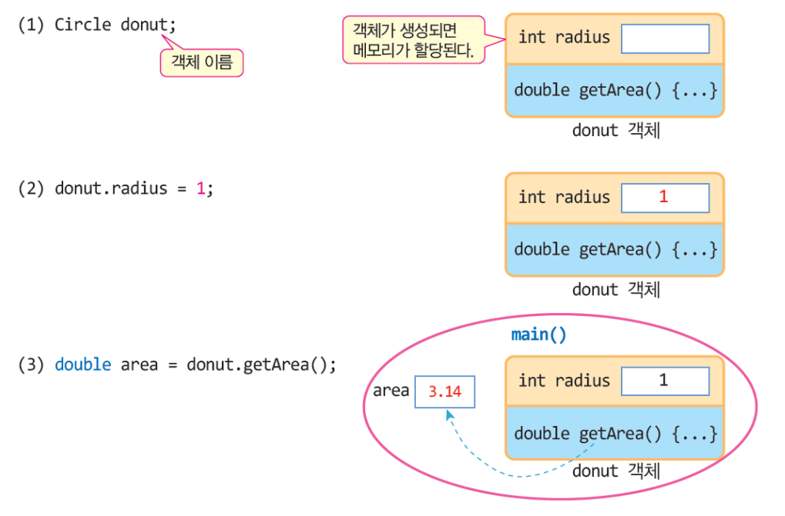
- 예제 2. Rectangle 클래스 예제
SourceCodeChecking
3절. 생성자¶
생성자(constructor)¶
- 객체가 생성되는 시점에서 자동으로 호출되는 멤버 함수
- 클래스 이름과 동일한 멤버 함수
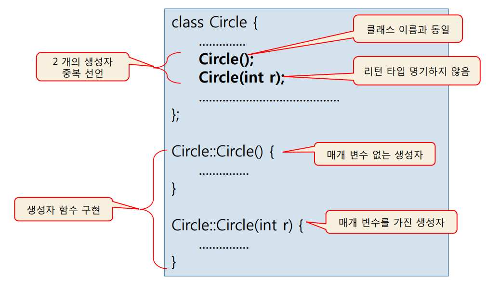
생성자 함수의 특징¶
- 생성자의 목적
- 객체가 생성될 때 객체가 필요한 초기화를 위해 만듦
- ex) 멤버 변수 값 초기화, 메모리 할당, 파일 열기, 네트워크 연결 등
- 생성자 이름
- 반드시 클래스 이름과 동일
- 생성자는 리턴 타입을 선언하지 않음
- 리턴 타입 없음
- void 타입 안됨
- 객체 생성 시 오직 한 번만 호출
- 자동으로 호출되므로 임의로 호출 불가능
- 각 객체마다 생성자 실행
- 생성자는 중복 가능
- 생성자는 한 클래스 내에 여러 개 가능
- 중복된 생성자 중 하나만 실행
-
생성자가 선언되어 있지 않으면 기본 생성자는 자동으로 생성
-
기본 생성자 : 매개 변수 없는 생성자
-
컴파일러에 의해 자동 생성
-
예제 3. 2개의 생성자를 가진 Circle 클래스 예제
SourceCodeChecking -
그림으로 이해하기
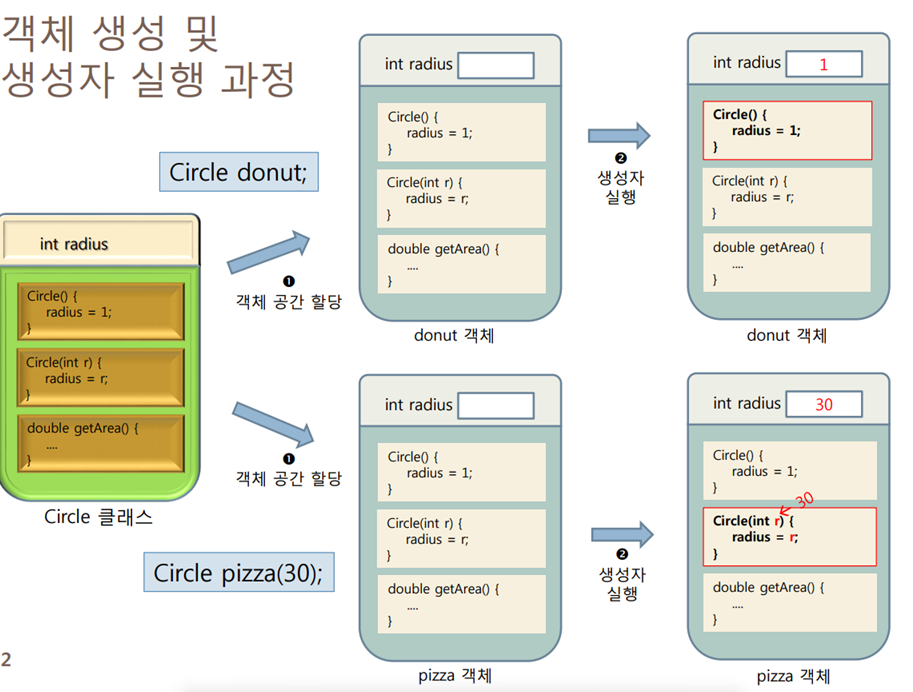
생성자가 다른 생성자 호출(위임 생성자)¶
- 여러 생성자에 중복 작성된 코드의 간소화
- 타겟 생성자와 이를 호출하는 위임 생성자로 나누어 작성
- 타겟 생성자 : 객체 초기화를 전담하는 생성자
- 위임 생성자 : 타겟 생성자를 호출하는 생성자로 객체 초기화를 타겟 생성자에 위임
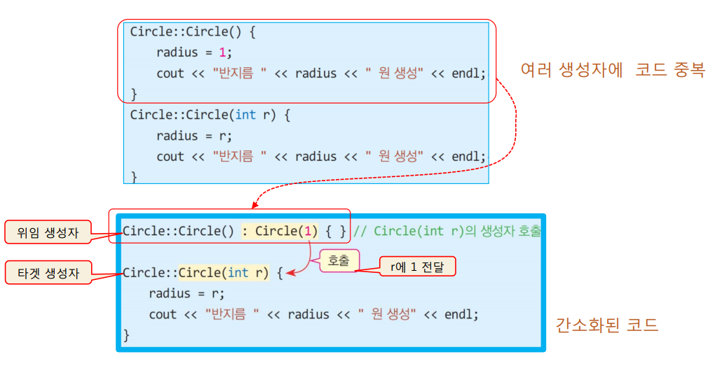
- 예제 4. 위임 생성자 예제
SourceCodeChecking
다양한 생성자의 멤버 변수 초기화 방법¶
1) 생성자 코드에서 멤버 변수 초기화¶
2) 생성자 서두에 초깃값으로 초기화¶
3) 클래스 선언부에서 직접 초기화¶
- 예제 5. 멤버 변수의 초기화와 위임 생성자 예제
SourceCodeChecking
기본 생성자¶
1) 생성자는 꼭 필요한가?¶
- C++ 컴파일러는 객체가 생성될 때, 생성자를 반드시 호출하기 때문에 필요함
2) 클래스에 생성자가 없는 경우에는 어떻게 되는가?¶
- 컴파일러에 의해 기본 생성자가 자동으로 생성됨
- 기본 생성자란 ?
- 매개 변수가 없는 생성자
- 디폴트 생성자라고도 함
기본 생성자가 자동으로 생성되는 경우¶
- 생성자가 하나도 작성되어 있지 않다면 기본 생성자가 자동으로 생성
- 컴파일러가 기본 생성자를 자동 생성함
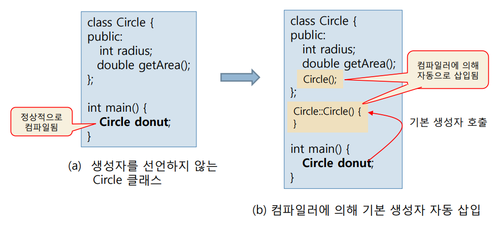
기본 생성자가 자동으로 생성되지 않는 경우¶
- 생성자가 하나라도 선언된 클래스의 경우
- 컴파일러는 기본 생성자를 자동 생성하지 않음
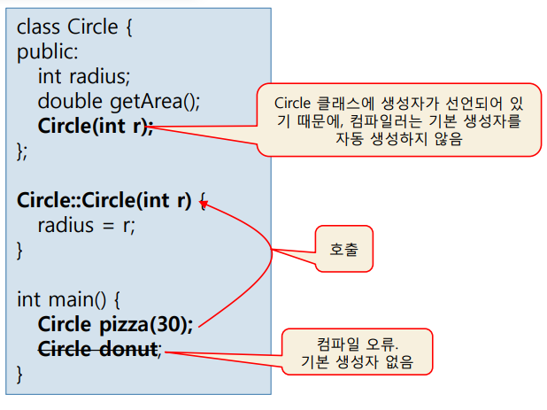
- 예제 6. Rectangle Class의 정사각형 판단 예제
SourceCodeChecking
4절. 소멸자¶
소멸자¶
- 객체가 소멸되는 시점에서 자동으로 호출되는 함수
- 오직 한 번만 자동 호출
- 임의로 호출 불가능
- 객체 메모리 소멸 직전 호출
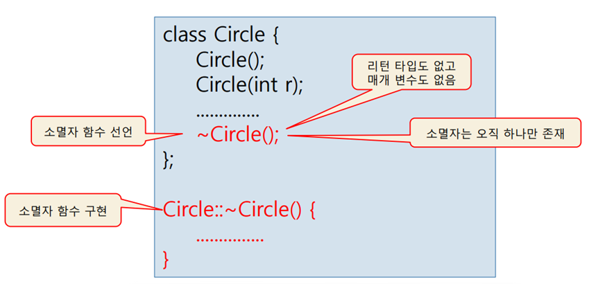
소멸자 특징¶
- 소멸자의 목적
- 객체가 사라질 때 마무리 작업
- 실행 도중 동적 할당 받은 메모리 해제
- 파일 저장 및 닫기
- 네트워크 닫기
- 소멸자 함수의 이름은 클래스 이름 앞에 '~'
- ex) Circle::~Circle() {...}
- 소멸자는 return이 없으며 어떤 값도 반환할 수 없음
- 반환하는 코드 작성 불가
- 중복 불가능
- 소멸자는 한 클래스 내에 오직 한 개만 작성 가능
- 소멸자는 매개 변수 없는 함수
-
소멸자가 선언되어 있지 않으면 기본 소멸자가 자동 생성
-
컴파일러에 의해 기본 소멸자 코드 생성
-
컴파일러가 생성한 기본 소멸자에는 어떠한 코드도 담겨있지 않음
-
예제 7. Circle Class의 소멸자 예제
SourceCodeChecking
생성자와 소멸자의 실행 순서¶
- 객체가 선언된 위치에 따른 분류
- 지역 객체
- 함수 내에 선언된 객체
- 함수가 종료되면 소멸
- 전역 객체
- 함수의 바깥에 선언된 객체
- 프로그램이 종료할 때 소멸
- 객체 생성 순서
- 지역 객체
- 함수가 호출되는 순간에 순서대로 생성
- 전역 객체
- 프로그램에 선언된 순서로 생성
- 객체 소멸 순서
- 함수가 종료되면 지역 객체가 생성된 순서의 역순으로 소멸
- 프로그램이 종료되면 전역 객체가 생성된 순서의 역순으로 소멸
-
new를 이용하여 동적으로 생성된 객체의 경우
-
new를 실행하는 순간 객체 생성
-
delete 연산자를 실행할 때 객체 소멸
-
예제 7. 지역 객체와 전역 객체의 생성 및 소멸 순서 예제
SourceCodeChecking
예제 7 설명¶
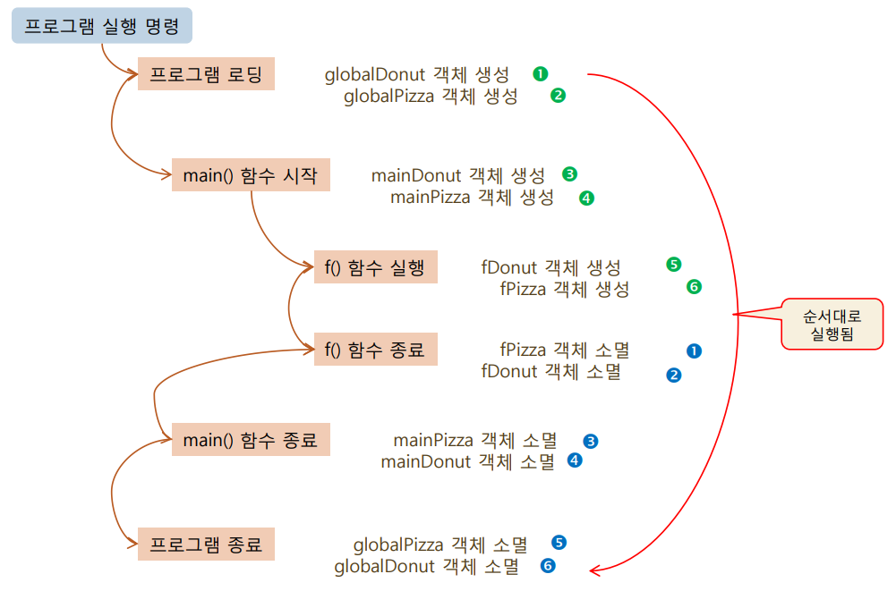
5절. 접근 지정자¶
접근 지정자¶
- 캡슐화의 목적
- 객체 보호 및 보안
- C++에서 객체의 캡슐화 전략
- 객체의 상태를 나타내는 데이터 멤버(멤버 변수)에 대한 보호
- 중요한 멤버는 다른 클래스나 객체에서 접근할 수 없도록 보호
- 외부와의 인터페이스를 위해서 일부 멤버는 외부에 접근 허용
- 멤버에 대한 접근 지정자 3개
- private
- 동일한 클래스의 멤버 함수에만 제한
- protected
- 클래스 자신과 상속받은 자식 클래스에만 허용
- public
- 모든 다른 클래스에 허용
중복 접근 지정과 디폴트 접근 지정¶
- 접근 지정의 중복
-
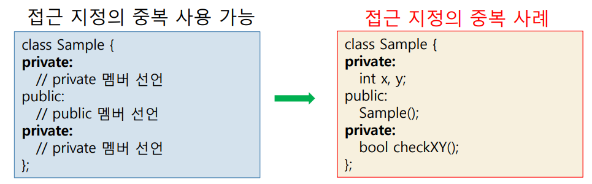
-
디폴트 접근 지정 private
-
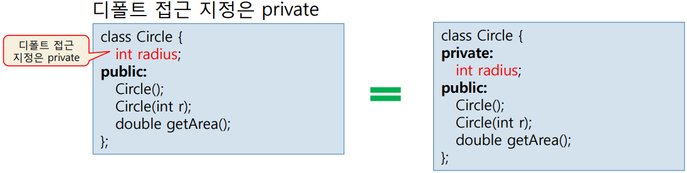
-
멤버 변수의 private 지정
-
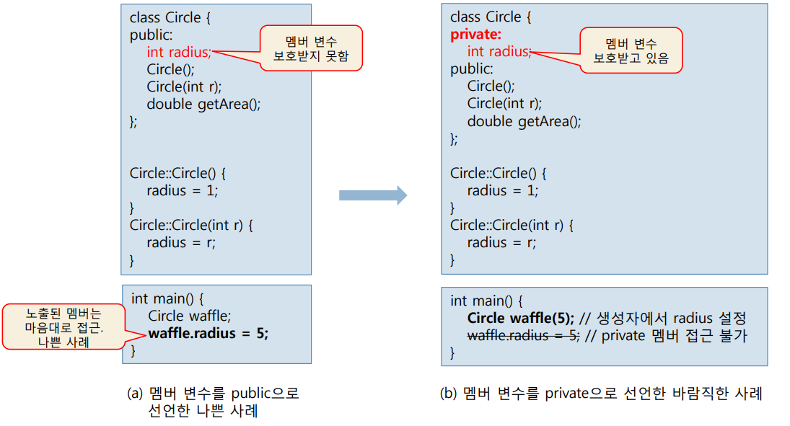
-
컴파일 오류 판정해보기
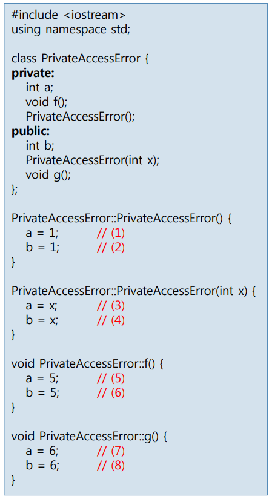
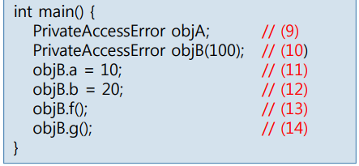
- 정답
- (9) 생성자 PrivateAccessError()는 private의 접근 지정자로 선언되어 있으므로 main()에서 호출이 불가능
- (11) a는 PrivateAccessError 클래스의 private 멤버이므로 main()에서 접근 불가능
- (13) f()는 PrivateAccessError 클래스의 private 멤버이므로 main()에서 호출 불가능
- 생성자도 private로 선언할 수 있음
- 생성자를 private로 선언하는 경우 한 클래스에서 오직 하나의 객체만 생성할 수 있도록 하기 위한 것
- singleton 패턴 이해하기
함수 호출에 따른 시간 오버헤드¶
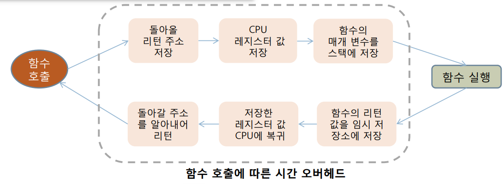
-
작은 크기의 함수를 호출하면 함수 실행 시간에 비해 호출을 위해 소요되는 부가적인 시간 오버헤드가 상대적으로 큼
-
오버헤드의 심각한 사례
#include <iostream>
using namespace std;
int odd(int x) {return (x % 2);}
int main(){
int sum = 0;
// 1에서 10000까지 홀수의 합을 계산하는 for문
for(int i = 0; i <= 10000; i++)
if(odd(i)) sum += i;
cout << sum;
}
// 출력 예시
// 25000000
- 위의 사례에서 odd() 함수의 코드 x%2를 계산하는 시간보다 odd() 함수 호출에 따른 오버헤드가 더 큼
- 심지어 루프를 돌게 되면 오버헤드가 가중됨
6절. 인라인 함수¶
인라인 함수¶
- 인라인 함수 ?
- inline 키워드로 선언된 함수
- 인라인 함수에 대한 처리
- 인라인 함수를 호출하는 곳에 인라인 함수 코드를 확장 삽입
- 매크로와 유사
- 코드 확장 후 인라인 함수는 사라짐
- 인라인 함수 호출
- 함수 호출에 따른 오버헤드 존재하지 않음
- 프로그램의 실행 속도 개선
- 컴파일러에 의해 이루어짐
- 인라인 함수의 목적
- C++ 프로그램의 실행 속도 향상
- 자주 호출되는 짧은 코드의 함수 호출에 대한 시간 소모 감소
- C++에 짧은 코드의 멤버 함수가 많기 때문
인라인 함수의 사례¶
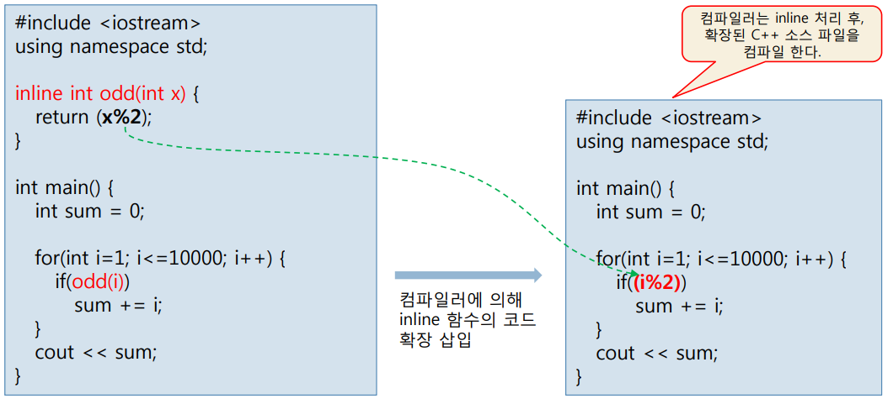
- 인라인 제약 사항
- inline은 컴파일러에게 주는 요구 메시지
- 컴파일러가 판단하여 inline 요구를 수용할 지 결정
- recursion, 긴 함수, static, 반복문, goto 문 등을 가진 함수는 수용 X
인라인 함수 장단점 및 자동 인라인¶
-
장점
-
프로그램의 실행 시간이 빨라짐
-
단점
- 인라인 함수 코드의 삽입으로 컴파일된 전체 코드 크기 증가
- 통계적으로 최대 30% 증가
- 짧은 코드의 함수를 인라인으로 선언하는 것을 권장
자동 인라인 함수¶
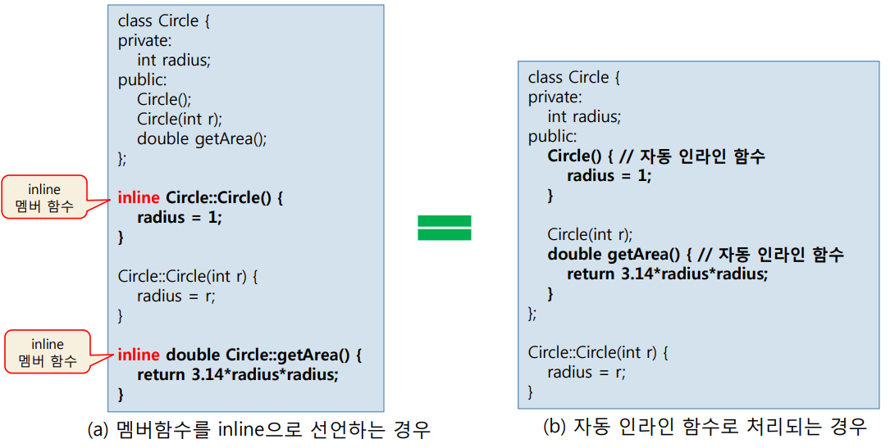
- 클래스 선언부에 구현된 멤버 함수
- inline으로 선언할 필요 없음
- 컴파일러에 의해 자동으로 인라인 처리
- 생성자 포함 모든 함수를 자동 인라인 함수로 사용 가능
7절. 구조체¶
C++의 구조체¶
- 구조체
- 상속, 멤버, 접근 지정 등 모든 것이 클래스와 동일
- 클래스와 유일하게 다른 점
- 구조체의 디폴트 접근 지정 : public
- 클래스의 디폴트 접근 지정 : private
- C++에서 구조체를 수용한 이유?
- C 언어와의 호환성을 위해
- C의 구조체 100% 호환하며 수용
- C 소스를 그대로 가져다 쓰기 위해
- 구조체 객체 생성
- struct 키워드 생략
struct StructName{
private:
// private 멤버 선언
protected:
// protected 멤버 선언
public:
// public 멤버 선언
};
구조체와 클래스의 디폴트 접근 지정 비교¶
-
구조체는 public, 클래스는 private
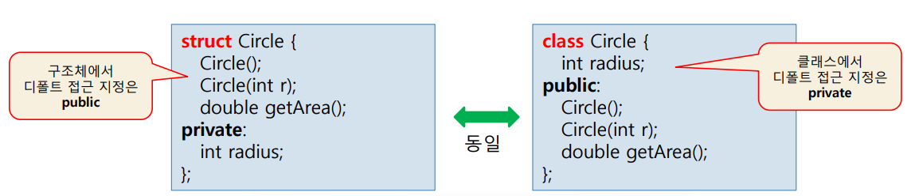
-
예제 8. 구조체 Circle Class 예제
SourceCodeChecking
8절. 헤더¶
올바른 C++ 클래스 작성법¶
- 클래스를 헤더 파일과 cpp 파일로 분리
- 클래스마다 분리 저장
- 클래스 선언부
- 헤더 파일(.h)에 저장
- 클래스 구현부
- cpp 파일에 저장
- 클래스가 선언된 헤더 파일 include
- main() 등 전역 함수나 변수는 다른 cpp 파일에 분산 저장
- 필요하면 클래스가 선언된 헤더 파일 include
- 목적
- 클래스 재사용
- 헤더 파일 분리 사례
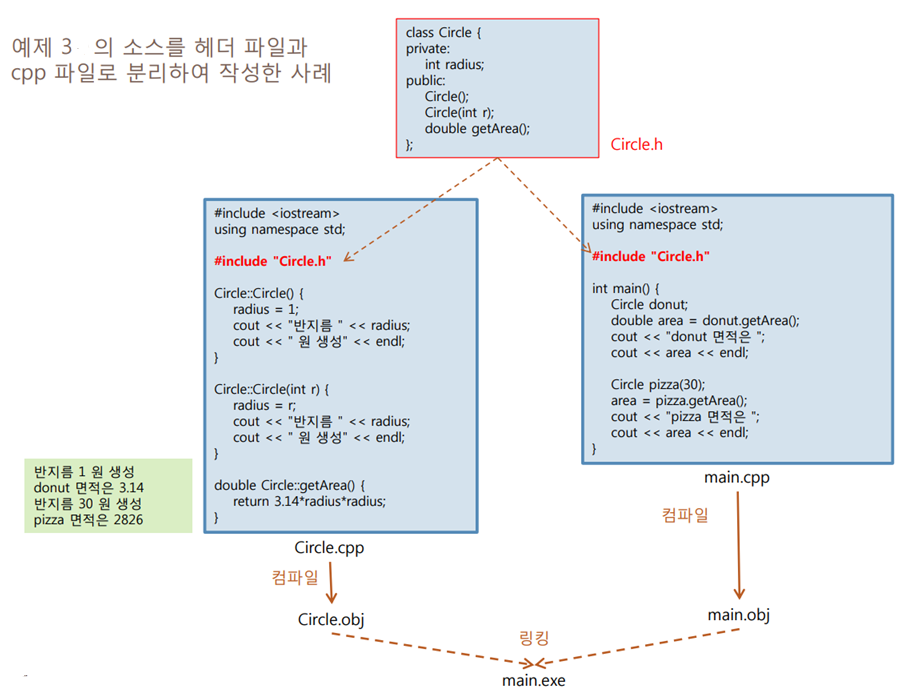
헤더 파일의 중복 include 문제¶
- 중복 include를 할 때 생기는 문제
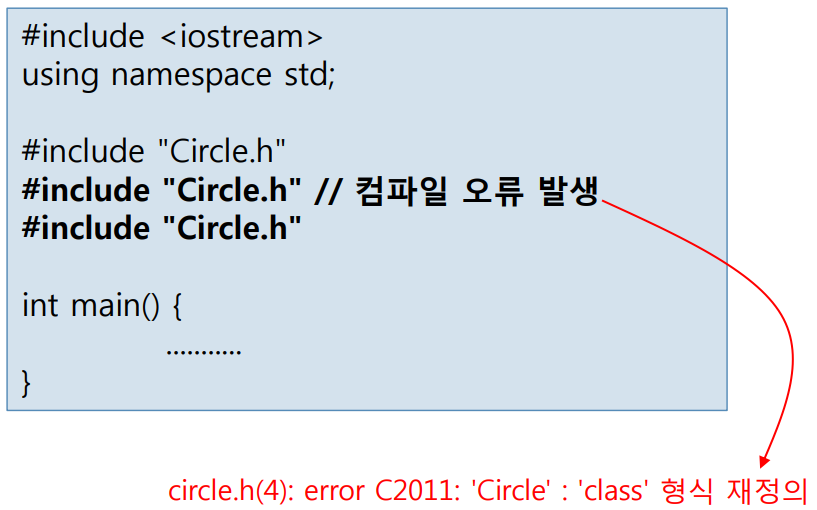
- 헤더 파일의 중복 include로 인해 생기는 문제를 조건 컴파일로 해결
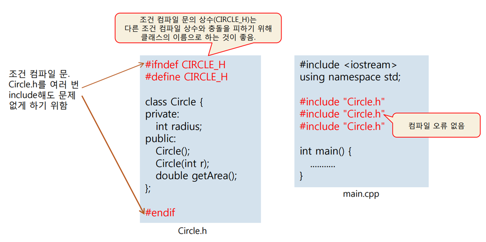
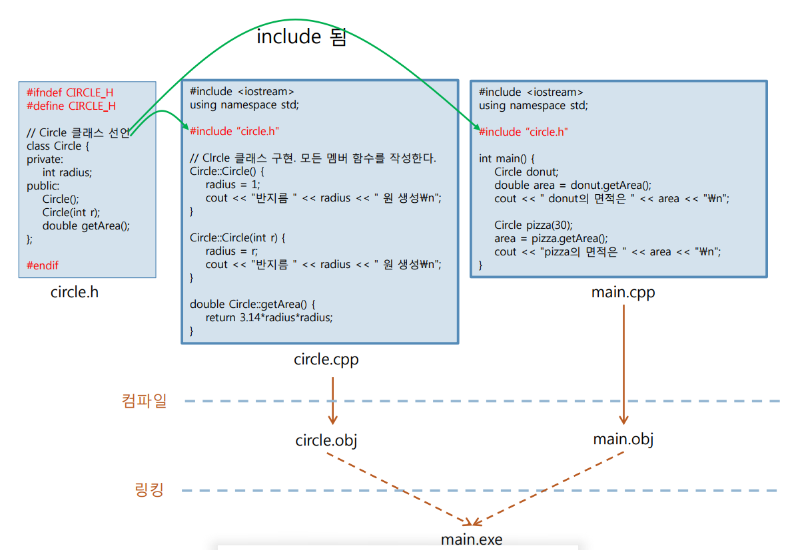
- 예제 9. 헤더 파일 분리 예제
SourceCodeChecking